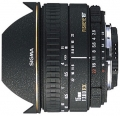

器材库 > 35mm画幅AF定焦镜头 > EX 15/2.8 Fisheye

详细规格
镜头类型
鱼眼镜头
发布日期
未知
焦距
15mm
最大光圈
f/2.8
最小光圈
f/22
视角（对角）
180
镜头结构
7片/6组
光圈叶片
7片
最近对焦距离
15cm
最大放大倍率
0.263倍
驱动马达
AF马达
镜头卡口
Canon EF, Minolta/Konica-Minolta/Sony AF, Nikon AF, Pentax AF, Sigma SA
防抖
否
颜色
黑色
尺寸
73.50x65.00mm
重量
370g
正版云飞扬2010-03-03 12:294.17 分
操作性 4.00耐用性 4.00性价比 4.50解像力 5.00色彩还原 4.00机械结构 3.50
kinwj2008-02-16 12:514.75 分
操作性 5.00耐用性 5.00性价比 5.00解像力 4.50色彩还原 4.50机械结构 4.50
钻心色眼2008-01-12 11:464.33 分
操作性 4.00耐用性 4.00性价比 5.00解像力 4.50色彩还原 4.50机械结构 4.00
EK3602006-03-05 17:364.92 分
操作性 5.00耐用性 5.00性价比 5.00解像力 5.00色彩还原 4.50机械结构 5.00
ultra3202006-02-22 13:314.25 分
操作性 4.00耐用性 4.00性价比 4.50解像力 4.50色彩还原 4.50机械结构 4.00
whokillyou2005-10-29 15:584.92 分
操作性 5.00耐用性 5.00性价比 5.00解像力 5.00色彩还原 4.50机械结构 5.00
稀饭王子2005-07-03 16:254.33 分
操作性 4.50耐用性 4.00性价比 5.00解像力 4.50色彩还原 5.00机械结构 3.00
ff1232005-06-29 10:454.5 分
操作性 4.50耐用性 4.00性价比 5.00解像力 5.00色彩还原 4.00机械结构 4.50
darwinz2003-08-19 09:374.17 分
操作性 4.00耐用性 3.50性价比 5.00解像力 4.00色彩还原 4.50机械结构 4.00
清醒的猫2003-06-19 23:274.42 分
操作性 4.50耐用性 4.00性价比 5.00解像力 4.50色彩还原 4.00机械结构 4.50
南瓜2003-05-28 23:165 分
操作性 5.00耐用性 5.00性价比 5.00解像力 5.00色彩还原 5.00机械结构 5.00
产品图 / 样片
外观图
评测 / 相关文章
该产品暂无存档的评测文章